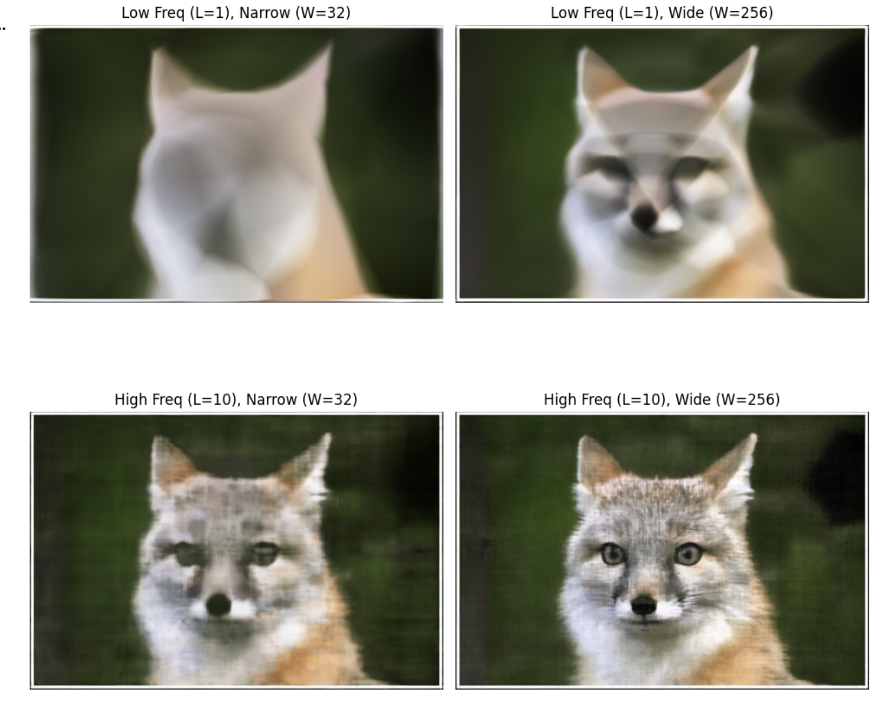
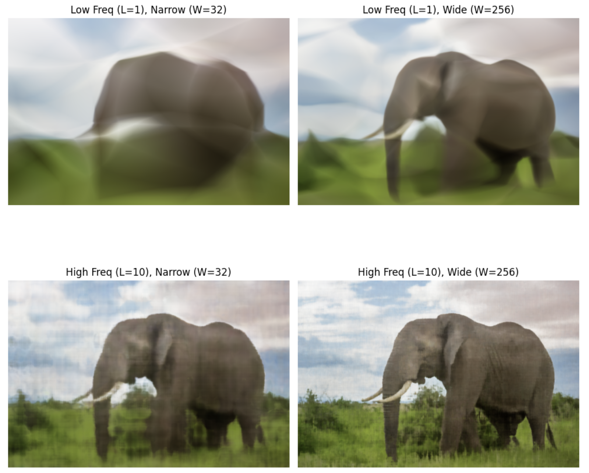

Project 4: Neural Radiance Fields (NeRF)
Overview
The goal of this project was to implement Neural Radiance Fields (NeRF) from scratch. I started by calibrating my own camera using ArUco markers, fitting a simple neural network to a 2D image, and finally implementing a full volumetric rendering pipeline to reconstruct 3D scenes from 2D images. This writeup details each part of the project along with results and challenges encountered.
Part 0 — Camera Calibration & Data Capture
Before training the NeRF, I needed to capture a dataset with known camera poses. I used a grid of ArUco markers to solve the Perspective-n-Point (PnP) problem.
0.1: Camera Intrinsics Calibration
I captured 30-50 calibration images of ArUco tags from various angles and distances. Using cv2.detectMarkers() and cv2.calibrateCamera(), I computed the camera intrinsic matrix K and distortion coefficients that minimize reprojection error between observed 2D points and known 3D marker corners.
TAG_SIZE = 0.06 meters
Calibration RMS Error: 2.07
Camera Matrix K and distortion coefficients saved to camera_params.npz
0.2: Object Scan Capture
I printed the aruco tag sheet (since that's what the lububu set did) and placed my object next to it. I captured 30-50 images from different angles at a consistent distance (~10-20cm), ensuring uniform lighting and avoiding motion blur. However, these images were huge and hence were downsized later. Here's an example of the image I took.

0.3: Camera Pose Estimation
For each captured image, I detected the ArUco tag and used cv2.solvePnP() to estimate the camera's rotation (rvec) and translation (tvec) relative to the tag. I converted these to camera-to-world (c2w) transformation matrices by inverting the world-to-camera transform.
0.4: Undistortion & Dataset Creation
I undistorted all images using cv2.undistort() to remove lens effects (pinhole camera assumption). To eliminate black borders, I used cv2.getOptimalNewCameraMatrix() with alpha=0 to crop to the valid pixel region and adjusted the principal point accordingly.
The final dataset was saved as my_data.npz with an 80/10/10 train/val/test split containing undistorted images, c2w matrices, and scaled focal length.
Part 1 — Fit a Neural Field to a 2D Image
Instead of storing an image as a grid of pixels, I trained a neural network to become the image itself. The network learns a continuous function that maps pixel coordinates (x, y) to RGB colors.
Model Architecture
Network Parameters:
- Input: 2D coordinates (x, y) normalized to [0, 1]
- Positional Encoding: L=10 (expands 2D → 42D using sinusoidal basis)
- Hidden Layers: 4 fully connected layers, 256 neurons each, ReLU activation
- Output: 3 RGB values with Sigmoid activation → [0, 1]
- Learning Rate: 1e-2 (Adam optimizer)
- Batch Size: 10,000 pixels per iteration
- Total Iterations: 2000
Why Positional Encoding?
Standard MLPs struggle with high-frequency details. Sinusoidal Positional Encoding expands each coordinate into multiple frequency bands, allowing the network to learn both coarse structure and fine details.
Results
Provided Test Image (Fox)
Hyperparameter Sweep (Fox)
Deliverable: 2×2 grid showing effect of PE levels (L=1 vs L=10) and network width (W=32 vs W=256)
Custom Image (Elephant)
Hyperparameter Sweep (Elephant)
Deliverable: 2×2 grid showing hyperparameter effects on custom image
Key Observations:
- Low L (frequency): Blurry results, misses fine details
- High L: Sharp details, captures high-frequency content
- Narrow width: Underfitting, poor reconstruction
- Wide width: Better capacity, improved PSNR
Part 2 — Fit a Neural Radiance Field to a 3D Scene
Extending from 2D to 3D, the NeRF network now takes 5D input: 3D position (x, y, z) and 2D viewing direction. It outputs volume density (σ) and view-dependent RGB color.
2.1: Create Rays from Cameras
I implemented three core functions to convert pixels to rays:
- pixel_to_camera(K, uv, s): Unprojects pixel coordinates to camera space using intrinsic matrix K
- transform(c2w, x_c): Transforms points from camera space to world space using c2w matrix
- pixel_to_ray(K, c2w, uv): Generates ray origin and normalized direction for each pixel
Key Implementation Detail: Ray origin is extracted from c2w translation component: o = c2w[:3, 3]. Ray direction is computed by transforming a camera-space point at depth s=1 to world space, then normalizing: d = (x_w - o) / ||x_w - o||
2.2: Stratified Sampling Along Rays
To avoid aliasing and ensure continuous coverage, I implemented stratified sampling with random jitter:
- Divide depth range [near, far] into N equal bins
- Compute bin boundaries as midpoints between samples
- Randomly perturb sample positions within each bin (training only)
- Compute 3D points:
pts = rays_o + rays_d × z_vals
For Lego dataset: NEAR=2.0, FAR=6.0, N_SAMPLES=128
2.3: Visualization of Rays and Samples
Verification Checklist:
- ✅ All camera frustums positioned correctly around object
- ✅ Rays originate from camera centers and point into scene
- ✅ Sample points evenly distributed along rays from near to far
- ✅ Ray directions properly normalized
2.4: NeRF Network Architecture
Network Parameters:
- Depth (D): 8 hidden layers
- Width (W): 256 neurons per layer
- Position Encoding: L_pos=10 (3D → 63D)
- Direction Encoding: L_dir=4 (3D → 27D)
- Skip Connection: At layer 5 (concatenate input back)
- Output: Density (σ with ReLU) + View-dependent RGB (Sigmoid)
Architecture Flow:
2.5: Volume Rendering Equation
The core volume rendering equation aggregates density and color samples along each ray:
Implementation Steps:
- Compute alpha: Convert density to opacity over step size
- Compute transmittance: Cumulative product of (1-alpha), shifted right with T_0=1
- Compute weights: w_i = T_i × α_i
- Accumulate color: Final RGB = Σ(weights × colors)
Validation: ✅ Passed numerical test with random batches (rtol=1e-4, atol=1e-4)
2.6: Training on Lego Bulldozer Dataset
Training Hyperparameters:
- Dataset: 100 training images, 200×200 resolution
- Batch Size: 4096 rays per iteration
- Learning Rate: 5e-4 (Adam) with MultiStep scheduler
- Iterations: 2000-5000
- Near/Far: 2.0 to 6.0
- Samples per Ray: 128
Training Progression
Deliverable: Predicted views showing progressive reconstruction quality
Training With Custom Data
Deliverable: Predicted custom views showing progressive reconstruction quality
Key Takeaways:
- I probably shouldn't have used a shiny object! I think that definitely messed stuff up
- Camera calibration accuracy directly impacts reconstruction quality
- Scene-specific near/far planes are critical for efficient depth sampling
- View-dependent effects (specular highlights) require proper direction encoding
- Longer training and higher sample counts improve fine geometric details
- Focal length must be scaled proportionally when resizing images
Challenges & Lessons Learned
Challenge 1: Coordinate System Confusion
The provided spiral generation code assumed standard Y-up coordinates, but my cameras were positioned in negative-Y space. I fixed this by implementing a robust look_at_origin() function that computes correct rotation matrices regardless of camera position, ensuring cameras always point at the origin.
Challenge 2: Focal Length Scaling
When training on resized images, I initially forgot to scale the focal length, causing a "zoom lens" effect where renders only showed a tiny patch. Fix: focal_render = focal_train × (W_render / W_train)
Challenge 3: DON'T USE SHINY OBJECTS
Self explanatory — the shiny surface caused inconsistent color observations from different angles, making it hard for the network to learn a coherent representation. Next time, I'll pick a matte object!